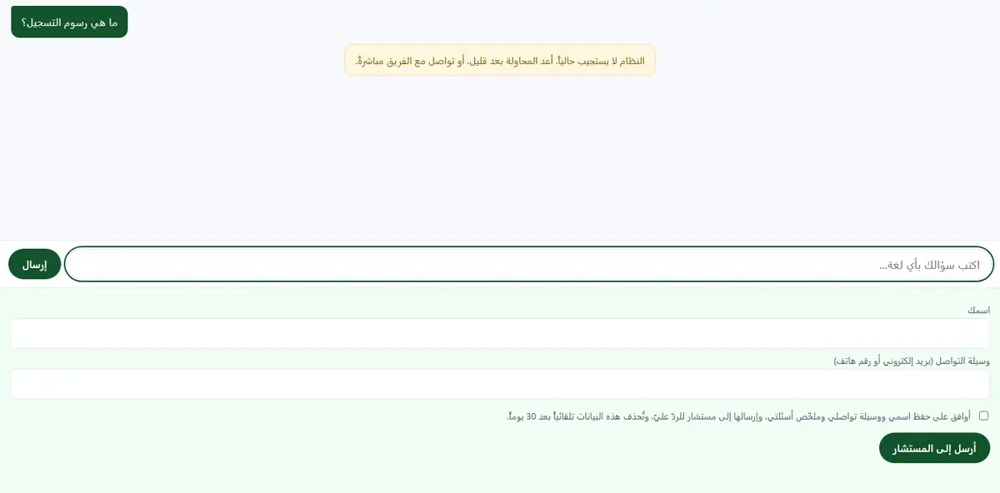

The scale, before any claim
Zero users · zero paying customers · 24 messages in one documented evaluation run, all sent by his own script — not one message from the tenant's own staff · and the model path is down today, not just yesterday: a real chat request I sent on 2026-09-04 returned "the system is not responding right now", while /healthz reported "model":"live" at the same moment
- The problem
- What is sold here is not the answer, it is the refusal — and refusal detection was originally built on text matching: `text.includes(dont_know_msg.slice(0,15))`. That sentence is editable by the tenant from their own dashboard, so changing one word made the coverage-gap report say "zero gaps" when there were a hundred — with no error, no warning, no log line. The obvious fix, a structural sentinel emitted by the model, would have traded one fragility for another, since model compliance is never guaranteed; so the implementation in `src/refusal.ts:134` is an addition, not a replacement: the sentinel is the first layer, and when it is absent detection falls back to the old text match verbatim (`src/refusal.ts:139`) and labels that path `via:"legacy"`. The decisive step is that the label was not left in memory: a `messages.refusal_via` column was added in `migrations/0006_refusal_via.sql` to count the fallbacks, written with every reply in `src/db.ts:303`, so the fallback rate became a query against the database rather than a script's printout — and the gate script deliberately refuses to print it (`scripts/gate-<tenant>.mjs:265`). The measurement revealed that placing the sentinel after what the model knows — the position required so it can state what it has before refusing — dropped compliance from 26/26 to 14/23: nine refusals out of twenty-three arrived through the fallback, not the sentinel (39%), while every visible indicator was green (blocking scale 24/24, zero duplicated refusals across twenty replies) — meaning no behavioural test would have caught it. The proposed fix was then frozen rather than improvised, its acceptance criterion written into `DECISIONS.md` on 2026-08-15 before it was built and before any result existed to be measured, and the number was published in the delivery report §2 rather than hidden.
- What it proves
- It proves Hani measures his safety mechanisms themselves, not only their outputs: he added a database column not to improve the product but to learn how often the safety mechanism was silently absent, found a failure in 39% of cases while every visible indicator was green, and then published that number in the client report instead of hiding it. And when he found it he did not patch it on impulse: he froze the fix and wrote its acceptance criterion before building it and before any result existed to be measured, because a criterion written after the result is a justification, not a criterion.
The mechanism
The defect happens first, then the mechanism that makes it impossible.
How to read it Read the diagram from the raw model output on the start side: it enters two layers, the structural sentinel (tagged sentinel) and, when the sentinel is absent, the old text match on the first 15 characters of a refusal sentence the tenant edits from their own panel (tagged legacy). The defect is that one edited word makes that match silently report zero gaps when there are a hundred; it is stopped at the messages.refusal_via column, where the legacy tag is written with every reply so the fallback rate becomes a database query rather than a script printout. The last step shows the price that column exposed: 9 of 23 refusals went through the fallback while every visible indicator was green — a figure recorded in DECISIONS.md and the delivery report, not reproducible by a single command.
Screens
Captured 2026-09-05 from the addresses shown beneath them, exactly as served — nothing staged.

The code, verbatim
export type RefusalVia = "sentinel" | "legacy" | null;
/**
* الكشف — **يقرأ ما قاله النموذج، لا ما جعلناه يقول.**
*
* 🔴 الترتيب ملزَم: هذه الدالة تستقبل مخرَج النموذج **الخام**. لو جرى
* `enforceRefusalText` قبلها لصار كل امتناعٍ `legacy` بالتعريف — لأن
* الإنفاذ يكتب الجملة المعتمدة — فيقيس العدّاد نفسه لا العلامة.
*
* @param raw نصّ النموذج كما ورد، بعلامته إن أصدرها
* @param marks علامات جملة الامتناع (أول 15 حرفاً) — للارتداد وحده
*/
export function detectRefusal(
raw: string,
marks: string[],
): { answered: boolean; via: RefusalVia } {
if (raw.includes(NO_SOURCE)) return { answered: false, via: "sentinel" };
/* حارس قائم يُحفظ: علامة فارغة تجعل `includes` ترجع true دائماً
فيُحتسب كل ردّ «بلا إجابة». */
const usable = marks.filter(Boolean);
if (!usable.length) return { answered: true, via: null };
const hit = usable.some((m) => raw.includes(m));
return hit ? { answered: false, via: "legacy" } : { answered: true, via: null };
}
Copied verbatim from the repository; nothing elided.
Every number, and the command that produced it
-
198
tests across 16 files inside the real Cloudflare Workers runtime. I ran the full suite five times: 198/198 in three, and in two runs under concurrent load one test (test/isolation.test.ts) failed on a 5000ms timeout — it passes when run alone. The count holds; the stability does not.
Source
npx vitest run # ⇒ Test Files 16 passed (16) · Tests 198 passed (198) في 3 من 5 تشغيلات · وفي 2 تحت حمل متزامن: 197 ناجحاً و1 ساقط بمهلة 5000ms -
0
TypeScript errors — strict mode, exit code 0
Source
npx tsc --noEmit; echo "exit=$?" # ⇒ exit=0 -
404
gateway response to a chat request carrying another tenant's slug from the demo domain — the same request with the correct slug returns 200 (both verified live on 2026-09-04)
Source
curl -s -o /dev/null -w "%{http_code}\n" -X POST https://<demo-host>/api/chat -H "Content-Type: application/json" -d '{"slug":"yasmin-store","session_id":"3f8a1c2e-4b6d-4a1f-9c3e-7d2b5a8f1e04","message":"test"}' # ⇒ 404 · وبـslug=<tenant> ⇒ 200 -
99.92%
prompt-cache hit rate across 24 requests — 739,320 of 739,890 tokens read from cache, with cache_read=30,805 identical in all twenty-four
Source
python -c "import re,io;t=io.open('delivery/<tenant>/gate-full.md',encoding='utf-8').read();i=[int(x) for x in re.findall(r'\bin=(\d+)',t)];c=[int(x) for x in re.findall(r'cache_read=(\d+)',t)];print(len(i),sum(c),sum(i),'%.4f%%'%(100*sum(c)/sum(i)))" # ⇒ 24 739320 739890 99.9230% -
3,434
lines of tests against 4,106 lines of source in src/ — a 0.84:1 ratio
Source
find test -name "*.ts" -exec cat {} + | wc -l && find src -name "*.ts" -exec cat {} + | wc -l # ⇒ 3434 · 4106 -
23/24
the total in the single evaluation run documented with a verbatim report (blocking scale 24/24 · advisory 23/24), one attempt per question with no retries
Source
grep -n "الحاجبة\|الإرشادية\|الإجمالي" delivery/<tenant>/gate-full.md # ⇒ 5: الحاجبة 24/24 · 7: الإرشادية 23/24 · 8: الإجمالي 23/24 · محاولات لكل سؤال: 1
What it does not do
- **It does not prove it never fabricates outside its golden set.** The evaluation is 24 questions in one run documented with a verbatim report whose header reads "blocking 24/24 · advisory 23/24 · total 23/24". Anything beyond those twenty-four questions is unmeasured, and the other runs are mentioned in prose with no report.
- **The 39% figure is recorded but not reproducible by a single command.** The mechanism is complete and inspectable (migration + detection and logging in `src/chat.ts:280-287` + the write in `src/db.ts:303` + coverage in `test/refusal.test.ts`), and the number is recorded in two places in the repo (`DECISIONS.md` and the delivery report §2) — but the D1 query output itself was never saved to a file.
- **The model path is down, and the health check lies.** `/healthz` returns `"model":"live"` because `describeProvider` in `src/providers/index.ts:71` treats the mere presence of `ANTHROPIC_API_KEY` as proof of life and never calls the model — while a real chat request returns an outage notice. This is exactly the class of silent-zero failure the whole project was built against, occurring inside its own health check.
- **No CI has ever run, no automated deploy, no public repository.** `git remote -v` is empty, so `.github/workflows/ci.yml` has never executed once, and deployment is entirely manual. Branch `main` is 23 commits behind the working branch (27 vs 50), and the live link expires on 2026-09-27 per `scripts/caps.json`.
Stack
- TypeScript (strict) — tsc --noEmit يخرج بصفر
- Cloudflare Workers + Hono ^4.13
- Cloudflare D1 (SQLite) — 5 migrations، طبقة وصول وحيدة في src/db.ts
- Cloudflare KV — حدود المعدّل وعدّادات منع تكرار التنبيهات
- Cloudflare Cron Triggers ("0 3 * * *") + Service Binding (SELF)
- Worker بوّابة منفصل (118 سطراً) يملك النطاق المخصّص للعرض
- @anthropic-ai/sdk ^0.115 — claude-haiku-4-5-20251001 مع prompt caching صريح
- Google Gemini 2.5 Flash كمزوّد بديل خلف نفس واجهة Provider
- zod ^4.4 للتحقق من المدخلات
- vitest ^4.1 + @cloudflare/vitest-pool-workers
- Playwright ^1.62 لاختبارات المتصفح واللقطات
- SSE لبثّ الرد حرفاً بحرف
- واجهة عربية RTL + خط IBM Plex Sans Arabic مستضاف ذاتياً
No link here: the demo's address names a client. The deployment expires 2026-09-27.
No public repository: the code was never pushed anywhere.